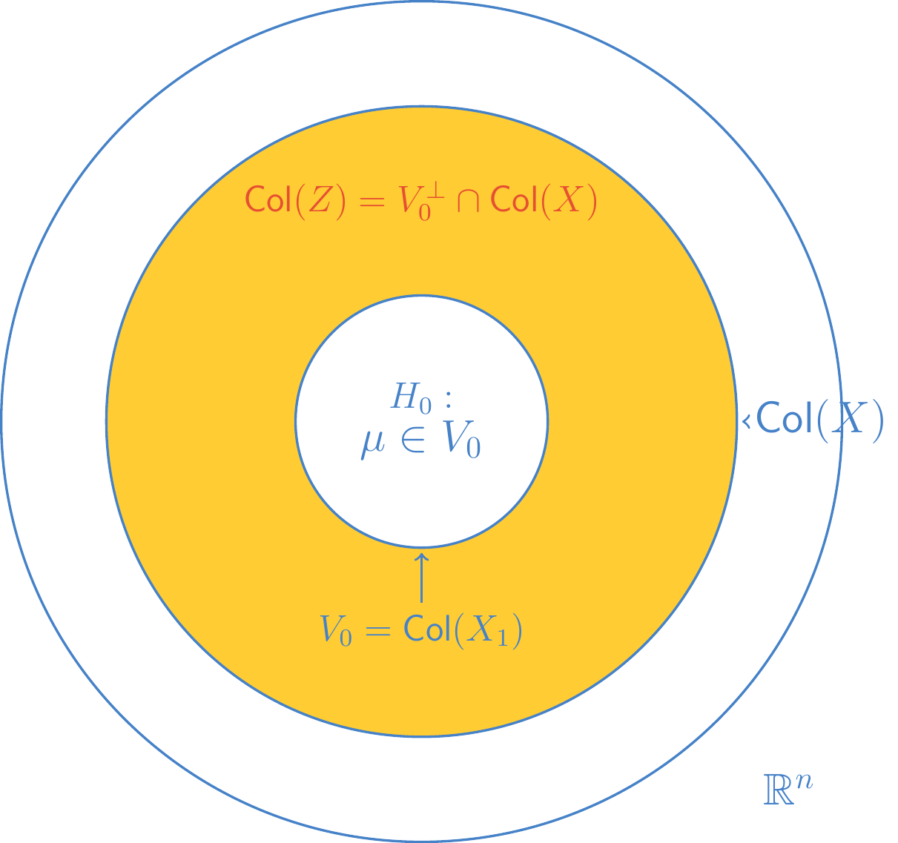

9 Non-full-rank Models
9.1 Estimation and F-test in Non-full-rank Models
The One-way Model
Consider the balanced one-way layout model for \(y_{ij}\), a response on the \(j^{th}\) unit in the \(i^{th}\) treatment group. Suppose that there are \(a\) treatments and \(n\) units in the \(i^{th}\) treatment group.
The cell-means model for this situation is:
\[ y_{ij} = \mu_i + e_{ij}, \quad i=1,...,a, \quad j=1,...,n \]
where the \(e_{ij}\) are i.i.d. \(N(0, \sigma^2)\).
An alternative, but equivalent, linear model is the effects model for the one-way layout:
\[ y_{ij} = \mu + \alpha_i + e_{ij}, \quad i=1,...,a, \quad j=1,...,n \]
with the same assumptions on the errors.
The cell means model can be written in vector notation as:
\[ y = \mu_1 x_1 + \mu_2 x_2 + \dots + \mu_a x_a + e, \quad e \sim N(0, \sigma^2 I) \]
and the effects model can be written as:
\[ y = \mu j_N + \alpha_1 x_1 + \alpha_2 x_2 + \dots + \alpha_a x_a + e, \quad e \sim N(0, \sigma^2 I) \]
where \(x_i\) is an indicator for treatment \(i\), and \(N=an\) is the total sample size.
- That is, the effects model has the same model matrix as the cell-means model, but with one extra column, a column of ones, in the first position.
- Notice that \(\sum_i x_i = j_N\). Therefore, the columns of the model matrix for the effects model are linearly dependent.
Let \(X_1\) denote the model matrix in the cell-means model, and \(X_2 = (j_N, X_1)\) denote the model matrix in the effects model. Note that \(\text{Col}(X_1) = \text{Col}(X_2)\).
Definition 9.1 (Equivalent Linear Models) In general, two linear models \(y = X_1 \beta_1 + e_1\) and \(y = X_2 \beta_2 + e_2\) with the same assumptions on \(e_1\) and \(e_2\) are equivalent linear models if \(\text{Col}(X_1) = \text{Col}(X_2)\).
9.1.1 Interpretation of Parameters and Constraints
Subject to the constraint \(\sum_i \alpha_i = 0\), the parameters of the effects model have the following interpretations:
- \(\mu\): grand mean response across all treatments.
- \(\alpha_i\): deviation from the grand mean placing \(\mu_i\) (the \(i^{th}\) treatment mean) up or down from the grand mean; i.e., the effect of the \(i^{th}\) treatment.
Without the constraint, \(\mu\) is not constrained to fall in the center of the \(\mu_i\). It is just an arbitrary baseline value. Adding the constraint \(\sum_i \alpha_i = 0\) essentially has the effect of reparameterizing from the overparameterized (non-full rank) effects model to a just-parameterized (full rank) model that is equivalent to the cell means model.
For example, consider the one-way effects model with \(a=3\) and \(n=2\). Then \(\sum_{i=1}^a \alpha_i = 0\) implies \(\alpha_3 = -(\alpha_1 + \alpha_2)\). The model becomes:
\[ y = \mu j_N + \alpha_1 x_1 + \alpha_2 x_2 + (-\alpha_1 - \alpha_2)x_3 + e \]
\[ = \mu j_N + \alpha_1 (x_1 - x_3) + \alpha_2 (x_2 - x_3) + e \]
which has the same model space as the cell-means model.
9.1.2 Approaches to Non-Full Rank Models
When faced with a non-full rank model like the one-way effects model, we have three ways to proceed:
Reparameterize to a full rank model
E.g., switch from the effects model to the cell-means model.
Add constraints to the model parameters
Remove the overparameterization by adding constraints (side-conditions), such as \(\sum_{i=1}^a \alpha_i = 0\). This essentially accomplishes a reparameterization to a full rank model.
Analyze the model as a non-full rank model
Limit estimation and inference to those functions of the parameters that can be uniquely estimated. Such functions are called estimable.
9.1.3 Least Squares Estimation
Even if \(X\) is not of full rank, the least-squares criterion is still reasonable and leads to the normal equations:
\[ X^T X \hat{\beta} = X^T y \]
Theorem 9.1 (Consistency of Normal Equations) For \(X\) an \(n \times p\) matrix of rank \(k < p \le n\), the normal equations \(X^T X \hat{\beta} = X^T y\) form a consistent system of equations because \(\text{Col}(X^T X) = \text{Col}(X^T)\).
Since the system is consistent, it has a (non-unique) solution given by:
\[ \hat{\beta} = (X^T X)^- X^T y \]
where \((X^T X)^-\) is some (any) generalized inverse of \(X^T X\).
Theorem 9.2 (Uniqueness of Projection) \(\hat{\beta} = (X^T X)^- X^T y\) is a solution to \((X^T X)\beta = X^T y\). Then \(\hat{y} = X\hat{\beta} = X(X^T X)^- X^T y\) is the projection of \(y\) onto \(\text{Col}(X)\). Since the projection onto a subspace is unique, \(\hat{y}\) is unique regardless of the choice of generalized inverse.
9.1.4 Distribution of \(\hat{\beta}\) and \(s^2\)
In the model \(y = X\beta + e\), where \(E(e)=0\), \(\text{Var}(e) = \sigma^2 I\), and \(X\) is \(n \times p\) of rank \(k \le p \le n\), we have the following properties:
- Unbiasedness: \(E(s^2) = \sigma^2\).
- Uniqueness: \(s^2\) is invariant to the choice of \(\hat{\beta}\) (i.e., to the choice of \((X^T X)^-\)).
\[ s^2 = \frac{SSE}{n-k} = \frac{||y - X\hat{\beta}||^2}{n-k} \]
where \(k = \text{rank}(X)\).
In the normal-errors model, distributions can be obtained.
Theorem 9.3 (Distributions in Non-Full Rank Models) In the model \(y \sim N(X\beta, \sigma^2 I)\):
For any given choice of \((X^T X)^-\):
\[ \hat{\beta} \sim N_p [(X^T X)^- X^T X \beta, \sigma^2 (X^T X)^- X^T X \{(X^T X)^-\}^T] \]
\((n-k)s^2 / \sigma^2 \sim \chi^2(n-k)\) and \(SSE/\sigma^2 \sim \chi^2(n-k)\).
For any given choice of \((X^T X)^-\), \(\hat{\beta}\) and \(s^2\) are independent.
9.1.5 Hypothesis Testing and Nested Models
Suppose \(y \sim N_n(X\beta, \sigma^2 I)\) where \(X\) is a matrix with rank \(k+1\). Let \(X = [X_1, X_2]\) where \(\text{rank}(X) = k+1\) and assume we are testing a reduced model involving \(X_1\).
Let:
- \(\hat{y} = P_{\text{Col}(X)} y\) (Full Model Projection)
- \(\hat{y}_0 = P_{\text{Col}(X_1)} y\) (Reduced Model Projection)
- \(\mu_0 = P_{\text{Col}(X_1)} (X\beta)\)
Theorem 9.4 (Partitioning of Sum of Squares)
Full Model Residual Sum of Squares:
\[ \frac{1}{\sigma^2} ||y - \hat{y}||^2 = \frac{1}{\sigma^2} y^T (I - P_{\text{Col}(X)}) y \sim \chi^2(n - k - 1) \]
Difference in Sum of Squares (Hypothesis):
\[ \frac{1}{\sigma^2} ||\hat{y} - \hat{y}_0||^2 = \frac{1}{\sigma^2} y^T (P_{\text{Col}(X)} - P_{\text{Col}(X_1)}) y \sim \chi^2(h, \lambda_1) \]
where \(h\) is the difference in rank (degrees of freedom) and the non-centrality parameter is:
\[ \lambda_1 = \frac{1}{2\sigma^2} ||(P_{\text{Col}(X)} - P_{\text{Col}(X_1)}) \mu||^2 = \frac{1}{2\sigma^2} ||\mu - \mu_0||^2 \]
Independence: The two quadratic forms above are independent.
Theorem 9.5 (F-Statistic for Nested Models) Under the conditions of the previous theorem:
\[ F = \frac{||\hat{y} - \hat{y}_0||^2 / h}{s^2} = \frac{y^T (P_{\text{Col}(X)} - P_{\text{Col}(X_1)}) y / h}{y^T (I - P_{\text{Col}(X)}) y / (n - k - 1)} \]
\[ \sim \begin{cases} F(h, n - k - 1), & \text{under } H_0 \\ F(h, n - k - 1, \lambda_1), & \text{under } H_1 \end{cases} \]
where \(\lambda_1\) is as given in the previous theorem.
The geometric interpretation corresponds to testing if the mean vector \(\mu\) lies in a subspace \(V_0 = \text{Col}(X_1)\). The sum of squares for the hypothesis is the projection onto the difference space \(\text{Col}(Z) = \text{Col}(X_1)^\perp \cap \text{Col}(X)\).